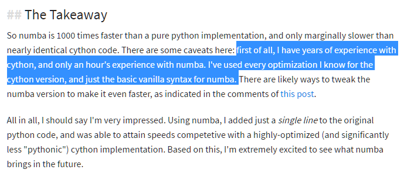

from sklearn import datasets, linear_model, metrics
from sklearn.model_selection import train_test_split
from sklearn.preprocessing import PolynomialFeatures
import math, scipy, numpy as np
from scipy import linalg5. Health Outcomes with Linear Regression
You can read an overview of this Numerical Linear Algebra course in this blog post. The course was originally taught in the University of San Francisco MS in Analytics graduate program. Course lecture videos are available on YouTube (note that the notebook numbers and video numbers do not line up, since some notebooks took longer than 1 video to cover).
You can ask questions about the course on our fast.ai forums.
Diabetes Dataset
We will use a dataset from patients with diabates. The data consists of 442 samples and 10 variables (all are physiological characteristics), so it is tall and skinny. The dependent variable is a quantitative measure of disease progression one year after baseline.
This is a classic dataset, famously used by Efron, Hastie, Johnstone, and Tibshirani in their Least Angle Regression paper, and one of the many datasets included with scikit-learn.
data = datasets.load_diabetes()feature_names=['age', 'sex', 'bmi', 'bp', 's1', 's2', 's3', 's4', 's5', 's6']trn,test,y_trn,y_test = train_test_split(data.data, data.target, test_size=0.2)trn.shape, test.shape((353, 10), (89, 10))Linear regression in Scikit Learn
Consider a system \(X\beta = y\), where \(X\) has more rows than columns. This occurs when you have more data samples than variables. We want to find \(\hat{\beta}\) that minimizes: \[ \big\vert\big\vert X\beta - y \big\vert\big\vert_2\]
Let’s start by using the sklearn implementation:
regr = linear_model.LinearRegression()458 µs ± 62.4 µs per loop (mean ± std. dev. of 7 runs, 1000 loops each)pred = regr.predict(test)It will be helpful to have some metrics on how good our prediciton is. We will look at the mean squared norm (L2) and mean absolute error (L1).
def regr_metrics(act, pred):
return (math.sqrt(metrics.mean_squared_error(act, pred)),
metrics.mean_absolute_error(act, pred))regr_metrics(y_test, regr.predict(test))(75.36166834955054, 60.629082113104403)Polynomial Features
Linear regression finds the best coefficients \(\beta_i\) for:
\[ x_0\beta_0 + x_1\beta_1 + x_2\beta_2 = y \]
Adding polynomial features is still a linear regression problem, just with more terms:
\[ x_0\beta_0 + x_1\beta_1 + x_2\beta_2 + x_0^2\beta_3 + x_0 x_1\beta_4 + x_0 x_2\beta_5 + x_1^2\beta_6 + x_1 x_2\beta_7 + x_2^2\beta_8 = y \]
We need to use our original data \(X\) to calculate the additional polynomial features.
trn.shape(353, 10)Now, we want to try improving our model’s performance by adding some more features. Currently, our model is linear in each variable, but we can add polynomial features to change this.
poly = PolynomialFeatures(include_bias=False)trn_feat = poly.fit_transform(trn)', '.join(poly.get_feature_names(feature_names))'age, sex, bmi, bp, s1, s2, s3, s4, s5, s6, age^2, age sex, age bmi, age bp, age s1, age s2, age s3, age s4, age s5, age s6, sex^2, sex bmi, sex bp, sex s1, sex s2, sex s3, sex s4, sex s5, sex s6, bmi^2, bmi bp, bmi s1, bmi s2, bmi s3, bmi s4, bmi s5, bmi s6, bp^2, bp s1, bp s2, bp s3, bp s4, bp s5, bp s6, s1^2, s1 s2, s1 s3, s1 s4, s1 s5, s1 s6, s2^2, s2 s3, s2 s4, s2 s5, s2 s6, s3^2, s3 s4, s3 s5, s3 s6, s4^2, s4 s5, s4 s6, s5^2, s5 s6, s6^2'trn_feat.shape(353, 65)regr.fit(trn_feat, y_trn)LinearRegression(copy_X=True, fit_intercept=True, n_jobs=1, normalize=False)regr_metrics(y_test, regr.predict(poly.fit_transform(test)))(55.747345922929185, 42.836164292252235)Time is squared in #features and linear in #points, so this will get very slow!
635 µs ± 9.25 µs per loop (mean ± std. dev. of 7 runs, 1000 loops each)Speeding up feature generation
We would like to speed this up. We will use Numba, a Python library that compiles code directly to C.
Numba is a compiler.
Resources
This tutorial from Jake VanderPlas is a nice introduction. Here Jake implements a non-trivial algorithm (non-uniform fast Fourier transform) with Numba.
Cython is another alternative. I’ve found Cython to require more knowledge to use than Numba (it’s closer to C), but to provide similar speed-ups to Numba.

Here is a thorough answer on the differences between an Ahead Of Time (AOT) compiler, a Just In Time (JIT) compiler, and an interpreter.
Experiments with vectorization and native code
Let’s first get aquainted with Numba, and then we will return to our problem of polynomial features for regression on the diabates data set.
import math, numpy as np, matplotlib.pyplot as plt
from pandas_summary import DataFrameSummary
from scipy import ndimagefrom numba import jit, vectorize, guvectorize, cuda, float32, void, float64We will show the impact of: - Avoiding memory allocations and copies (slower than CPU calculations) - Better locality - Vectorization
If we use numpy on whole arrays at a time, it creates lots of temporaries, and can’t use cache. If we use numba looping through an array item at a time, then we don’t have to allocate large temporary arrays, and can reuse cached data since we’re doing multiple calculations on each array item.
# Untype and Unvectorized
def proc_python(xx,yy):
zz = np.zeros(nobs, dtype='float32')
for j in range(nobs):
x, y = xx[j], yy[j]
x = x*2 - ( y * 55 )
y = x + y*2
z = x + y + 99
z = z * ( z - .88 )
zz[j] = z
return zznobs = 10000
x = np.random.randn(nobs).astype('float32')
y = np.random.randn(nobs).astype('float32')49.8 ms ± 1.19 ms per loop (mean ± std. dev. of 7 runs, 10 loops each)Numpy
Numpy lets us vectorize this:
# Typed and Vectorized
def proc_numpy(x,y):
z = np.zeros(nobs, dtype='float32')
x = x*2 - ( y * 55 )
y = x + y*2
z = x + y + 99
z = z * ( z - .88 )
return znp.allclose( proc_numpy(x,y), proc_python(x,y), atol=1e-4 )True35.9 µs ± 166 ns per loop (mean ± std. dev. of 7 runs, 10000 loops each)Numba
Numba offers several different decorators. We will try two different ones:
@jit: very general@vectorize: don’t need to write a for loop. useful when operating on vectors of the same size
First, we will use Numba’s jit (just-in-time) compiler decorator, without explicitly vectorizing. This avoids large memory allocations, so we have better locality:
@jit()
def proc_numba(xx,yy,zz):
for j in range(nobs):
x, y = xx[j], yy[j]
x = x*2 - ( y * 55 )
y = x + y*2
z = x + y + 99
z = z * ( z - .88 )
zz[j] = z
return zzz = np.zeros(nobs).astype('float32')
np.allclose( proc_numpy(x,y), proc_numba(x,y,z), atol=1e-4 )True6.4 µs ± 17.6 ns per loop (mean ± std. dev. of 7 runs, 100000 loops each)Now we will use Numba’s vectorize decorator. Numba’s compiler optimizes this in a smarter way than what is possible with plain Python and Numpy.
@vectorize
def vec_numba(x,y):
x = x*2 - ( y * 55 )
y = x + y*2
z = x + y + 99
return z * ( z - .88 )np.allclose(vec_numba(x,y), proc_numba(x,y,z), atol=1e-4 )True5.82 µs ± 14.4 ns per loop (mean ± std. dev. of 7 runs, 100000 loops each)Numba is amazing. Look how fast this is!
Numba polynomial features
@jit(nopython=True)
def vec_poly(x, res):
m,n=x.shape
feat_idx=0
for i in range(n):
v1=x[:,i]
for k in range(m): res[k,feat_idx] = v1[k]
feat_idx+=1
for j in range(i,n):
for k in range(m): res[k,feat_idx] = v1[k]*x[k,j]
feat_idx+=1Row-Major vs Column-Major Storage
From this blog post by Eli Bendersky:
“The row-major layout of a matrix puts the first row in contiguous memory, then the second row right after it, then the third, and so on. Column-major layout puts the first column in contiguous memory, then the second, etc…. While knowing which layout a particular data set is using is critical for good performance, there’s no single answer to the question which layout ‘is better’ in general.
“It turns out that matching the way your algorithm works with the data layout can make or break the performance of an application.
“The short takeaway is: always traverse the data in the order it was laid out.”
Column-major layout: Fortran, Matlab, R, and Julia
Row-major layout: C, C++, Python, Pascal, Mathematica
trn = np.asfortranarray(trn)
test = np.asfortranarray(test)m,n=trn.shape
n_feat = n*(n+1)//2 + n
trn_feat = np.zeros((m,n_feat), order='F')
test_feat = np.zeros((len(y_test), n_feat), order='F')vec_poly(trn, trn_feat)
vec_poly(test, test_feat)regr.fit(trn_feat, y_trn)LinearRegression(copy_X=True, fit_intercept=True, n_jobs=1, normalize=False)regr_metrics(y_test, regr.predict(test_feat))(55.74734592292935, 42.836164292252306)7.33 µs ± 19.8 ns per loop (mean ± std. dev. of 7 runs, 100000 loops each)Recall, this was the time from the scikit learn implementation PolynomialFeatures, which was created by experts:
635 µs ± 9.25 µs per loop (mean ± std. dev. of 7 runs, 1000 loops each)605/7.778.57142857142857This is a big deal! Numba is amazing! With a single line of code, we are getting a 78x speed-up over scikit learn (which was optimized by experts).
Regularization and noise
Regularization is a way to reduce over-fitting and create models that better generalize to new data.
Regularization
Lasso regression uses an L1 penalty, which pushes towards sparse coefficients. The parameter \(\alpha\) is used to weight the penalty term. Scikit Learn’s LassoCV performs cross validation with a number of different values for \(\alpha\).
Watch this Coursera video on Lasso regression for more info.
reg_regr = linear_model.LassoCV(n_alphas=10)reg_regr.fit(trn_feat, y_trn)/home/jhoward/anaconda3/lib/python3.6/site-packages/sklearn/linear_model/coordinate_descent.py:484: ConvergenceWarning: Objective did not converge. You might want to increase the number of iterations. Fitting data with very small alpha may cause precision problems.
ConvergenceWarning)LassoCV(alphas=None, copy_X=True, cv=None, eps=0.001, fit_intercept=True,
max_iter=1000, n_alphas=10, n_jobs=1, normalize=False, positive=False,
precompute='auto', random_state=None, selection='cyclic', tol=0.0001,
verbose=False)reg_regr.alpha_0.0098199431661591518regr_metrics(y_test, reg_regr.predict(test_feat))(50.0982471642817, 40.065199085003101)Noise
Now we will add some noise to the data
idxs = np.random.randint(0, len(trn), 10)y_trn2 = np.copy(y_trn)
y_trn2[idxs] *= 10 # label noiseregr = linear_model.LinearRegression()
regr.fit(trn, y_trn)
regr_metrics(y_test, regr.predict(test))(51.1766253181518, 41.415992803872754)regr.fit(trn, y_trn2)
regr_metrics(y_test, regr.predict(test))(62.66110319520415, 53.21914420254862)Huber loss is a loss function that is less sensitive to outliers than squared error loss. It is quadratic for small error values, and linear for large values.
\[L(x)= \begin{cases} \frac{1}{2}x^2, & \text{for } \lvert x\rvert\leq \delta \\ \delta(\lvert x \rvert - \frac{1}{2}\delta), & \text{otherwise} \end{cases}\]
hregr = linear_model.HuberRegressor()
hregr.fit(trn, y_trn2)
regr_metrics(y_test, hregr.predict(test))(51.24055602541746, 41.670840571376822)